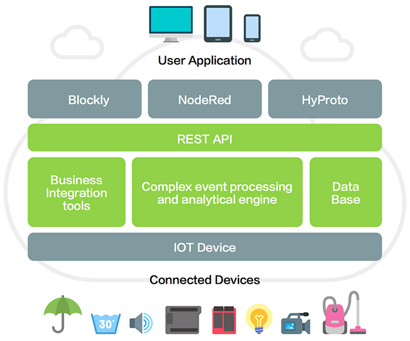

Webduino 雲端平台
「Webduino 雲端平台」是 Webduino 所研發的雲端服務，平台裡不僅具備全方位的物聯網開發工具：雲端裝置管理、Webduino Blockly，未來更會整合模擬器、App 開發工具和後端流程工具，實現「只要做一個網頁，就可以從硬體到軟體、從軟體到雲端、從雲端到行動裝置」的完整應用。

Webduino 雲端平台的四大服務
Webduino 雲端平台將會包含以下四大服務功能，透過這四大服務，將可以完整實現所有的開發流程。
1. Webduino Blockly 程式積木 ( 正式推出 )
有別於目前「免註冊」的 Webduino Blockly ( https://blockly.webduino.io )，雲端平台的 Webduino Blockly 具備存檔與共享檔案的功能，並提供豐富的電子元件與傳感器模組 ( 空氣懸浮粒子 ( PM2.5 ) 偵測、電子磅秤、條碼機、OLED、LCD、MP3 播放器 )，此外，也可以透過 Google 試算表、線上繪製圖表...等網頁服務，完成進階的創意應用。
未來，雲端平台的 Webduino Blockly 更會整合線上模擬器與關卡體驗教學，實現最完整的物聯網開發流程。

2. Webduino Device 裝置管理 ( 正式推出 )
透過 Webduino Device 裝置管理的協助，不論手邊有多少物聯網的開發裝置，都可以在雲端平台上掌握裝置的上下線狀態、韌體版本以及安全性設定，不在身邊的裝置，透過雲端更新的方式也可輕鬆進行遠端更新，甚至多台裝置可以同時更新、同時設定。
如今擁有 Webduino Device 裝置管理之後，裝置的操控安全性與穩定性更會大幅提升，使用者將會感受到最方便物聯網裝置管理體驗。

3. Webduino HyProto APP 開發 ( 預計 2017 年底推出 )
Webduino HyProto 將會滿足所有物聯網與網頁開發者的願望：「快速打造 APP」，使用者只需要使用 HyProto「做一個網頁」，就能輕鬆打造 APP 介面、控制物聯網裝置並串起各式網頁服務，最後更可以發佈為 Android 與 iOS 的 APP。
透過 Webduino HyProto 的輔助，任何人都能搖身一變成為 APP 大師，都能輕鬆掌握網頁、APP 和物聯網的開發精髓。

4. Webduino 流程開發工具 ( 預計 2018 年推出 )
Webduino 流程開發工具是一個擁有強大功能的後端服務，就算是完全不會網頁後端的技術，都可以透過簡單的流程圖組合，輕鬆部署程式到伺服器運作，不論寄送 Eamil、發送 Twitter 都可以輕鬆達成。
如果您還想了解更多，可以參考：
2. Blockly 教學：https://goo.gl/Y8sRkl
3. 產品總覽：https://webduino.io/buy.html
4. 露天賣場：http://goo.gl/0Dj9ip